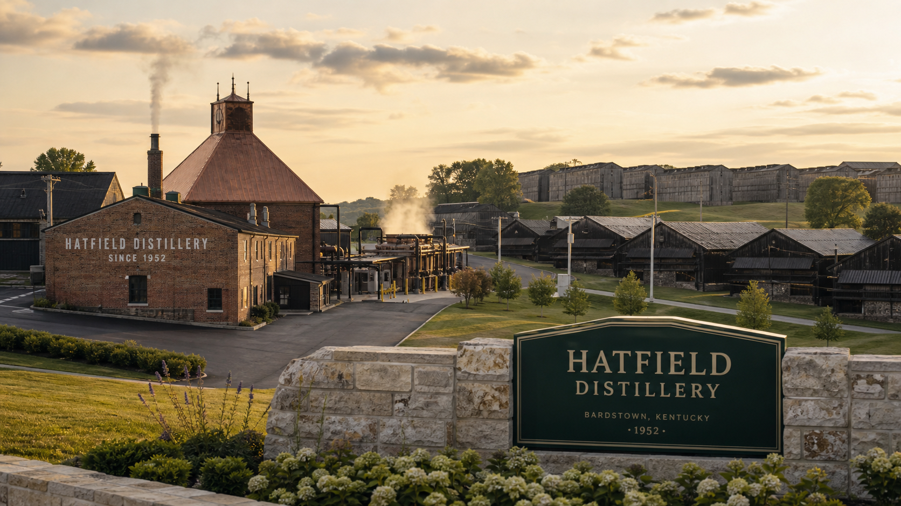

Hatfield Distillery
working distillery and visitor siteBardstown
Kentucky, USA · heritage site founded 1952

Bardstown is the 1952 bourbon home. Perthshire is a local Scottish venture whose single malt will launch only when ready.
Kentucky, USA · heritage site founded 1952
Scotland, United Kingdom · single malt maturing; gin released